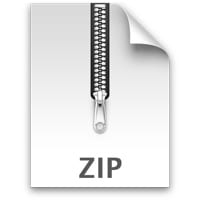

- CRISPR.zip:
- 00--CRISPR
- 01--angle_baby
- 02--dark_mode
- 03--hard_disagree
- 04--full_responsivity
- 05--oh_how_the_turn_tables
- 06--hyper
- 07--tornado
- 08--on_acid
- 09--there_will_come_soft_rains
2.
How does it work?
- Download the CRISPR.zip file  and unpack it
- Open Chrome and go to chrome://extensions/.
- Enable Developer Mode [toggle at the top right].
- Click Load unpacked and select the 00--CRISPR folder.
- Repeat #4. for all folders.
- The extensions are now loaded and will run on all pages.
- Protip: Pin the 00--CRISPR extension to your toolbar to manage your new extensions.

3.
Introduction to Browser Plugins
This project explores the intersection of language, aesthetics, and digital presence through an
interventionist approach to web typography. By animating the unseen, transitioning text strokes, and
embedding subtle interactions into the digital reading experience, it invites reflection on the ways
we
perceive and engage with information online.
In a time when the internet has become our primary library, stage, and conversation
space, the project
asks: What does it mean to read online? How do design and motion influence the weight of words? By
altering the familiar—text as mere content delivery—it seeks to transform digital reading into a
sensory, reflective act. Here, even the seemingly minor properties of typography, such as stroke
width,
become dynamic, carrying metaphors for emphasis, movement, and meaning.
Ultimately, the project gestures toward a reimagining of how we navigate the infinite pages of the
web:
as more than consumers of information, but as participants in a living, visual dialogue between
language
and technology.